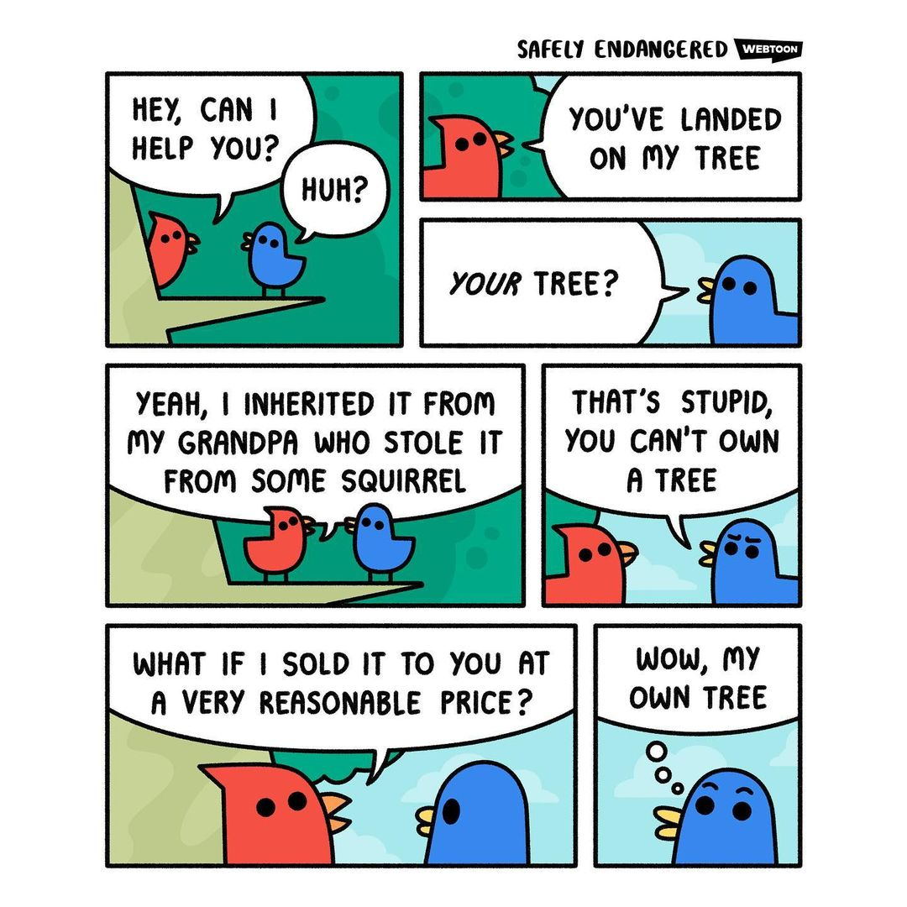

GeoLibertarian Arguments
Table of Contents
I wrote these arguments in late-2020 shortly after I accepted Georgism and started identifying as a GeoLibertarian, hence the title of this post. Although I’m not Libertarian anymore, I still endorse these arguments since they use sound reasoning and are consistent with my current philosophy. I also insist that a true Right-Libertarian who seeks to be compatible with the Libertarian conception of the Non-Aggression Principle would necessarily have to support Georgism in order for their ethical and political philosophy to be truly consistent with what they claim to support. These arguments show why Alloidal Libertarians support positive rights, unequal negative rights, and inefficient economics.
1. Land And Negative Rights
- Negative rights do NOT entitle someone to the fruits of someone else’s labor.
- Positive rights DO entitle someone to the fruits of someone else’s labor.
- An equal right to land does NOT entitle someone to the fruits of someone else’s labor (because land cannot be created by labor).
Conclusion: Having an equal right to land is a negative right, not a positive right.
2. Equal Land Rights Are Required For Everyone To Have An Equal Opportunity To Be Productive
- There is a finite supply of land and natural resources on Earth. (At the same time, there is an ever increasing human population)
- A homesteading system that grants private ownership of land and natural resources some (but not most) people to claim most of the land and natural resources before anybody else could.
- Once all the land and natural resources are privately owned by a minority of people, that minority will gain massive amounts of unlabored economic value (while everyone else suffers undeserved economic inequality).
Conclusion: If we want to ensure that everybody on Earth has a fair and equal opportunity to use land and natural resources for themselves, then land and natural resources should belong to everyone.
3. Equal Land Rights Are Necessary For Truly Free-Markets
- Land is necessary in order to be productive (because it’s one of the three factors of production: land, labor, and capital).
- If everyone had an equal right to land, then everyone would have a more equal opportunity to be as productive as anyone else.
- If everyone had an equal opportunity to be productive, then the economy as a whole would be more productive and more laissez-faire.
Conclusion: If everyone had an equal right to land, the economy would be more free-market and more productive.
- When people have unequal rights to be productive1, the economy is less laissez-faire and less free-market.
- The current system of property rights leads to everybody not having an equal right to land.
- Land is necessary in order to be productive (because it’s one of the three factors of production: land, labor, and capital).
- The current system of property rights thus leads to everyone not having have an equal right to be productive1.
Conclusion: The current system of property rights leads to everyone not having an equal right to be productive1, which leads to an anti-free-market economy, thus contradicting Libertarian values.
4. The Georgist Theory of Property
- Every person owns themself.
- Every person thus owns the labor that they produce.
- Every person thus owns anything produced by their labor.
- People can trade things that they create with their labor for things that other people create with their labor.
- Land is not created by labor.
- But land is necessary in order to be productive (because it’s one of the three factors of production: land, labor, and capital).
- In order for everybody to have an equal right to be productive1, everybody must have an equal right to land.
- In order to have a free-market economy, everybody must have an equal right to be productive1, otherwise the economy is anti-free-market.
Conclusion: In order to have a truly free-market economy, everybody must have an equal right to land. Likewise, no one should have unchecked ownership of land because they did not create the land, lest the economy be anti-free-market.
5. Why Everybody Owns Land Equally
If someone steals something and sells it to someone else, then the transaction is not valid because people cannot trade things that they don’t rightfully own, and that property has to be returned to the original owner. Similarly, it makes no sense to buy, sell, and trade land since all land was eventually stolen at some point by the ancestors of one of the people making the trade.
But if a landowner has to pay taxes on their land, then they don’t truly own it.
Correct, they don’t truly own it. The rightful owners of the Earth’s land is (collectively) everybody:
- If someone steals something and sells it to someone else, then the transaction is not valid, because people cannot trade things that they don’t legally own.
- If stolen property is used within a transaction, then the transaction is invalid, and the property has to be returned to the original owner.
- All land was stolen at some point in human history.
- All landowners either stole their land from someone else, or they bought their land from someone who bought/inherit/stole it from someone else who got it from someone else and so on. The last person at the final end of the transaction stole that land.
- Before land was ever privately owned by anybody, land was not owned by anybody, which is essentially the same as everybody owning the land equally.
- Everybody was therefore the original owners of the Earth’s land.
- If the land was initially stolen, but also passed onto today’s owners through a combination of inheritance, theft, and trade, none of those transactions were valid because stolen property was used in the transactions, as established in [1].
- The land should therefore be returned to its original owners: Everybody.
Occupying land prevents other people from using it. If land is owned equally, then a person who fences off land to prevent other people from using it (without giving due compensation) is effectively stealing that land from the commons.
|  |  |
But if everybody owns land equally, then that must be the same thing as nobody owning any land at all?
Technically yes, but that does not constitute an argument against equitable land ownership. Georgism still solves the Tragedy of the Commons with respect to land because Georgism explicitly allows private possession of land.
6. Land Speculation Bestows Positive Rights
- The value of land in residential areas depends on all the businesses, shops, services, etc in the community surrounding that land.
- Land speculators can claim land and do absolutely nothing with it.
- If the community surrounding the speculated land grows in size, then the speculated land gains value.
- Whenever someone is given a dollar that they didn’t work for, someone else worked for a dollar that they didn’t get.
- The land speculator did absolutely no labor to improve the value of the land that surrounds their speculative area (nor did they provide any restitution back to the surrounding community).
- It follows that the community surrounding the speculated land worked for a dollar that they didn’t get.
Conclusion I: The land speculator is able to siphon the fruits of the community’s labor away from the community for himself (this is called rent-seeking). This is tantamount to invisible theft, similar to inflation, but stolen by a different means.
Conclusion II: Conferring this value to the land speculators without them paying back to the community is a covert way of granting undeserved economic value (positive rights) to the land speculator.
Conclusion III: Georgism (Land Value Taxation and a Citizen’s Dividend) is necessary in order to avoid granting positive rights to land speculators (in addition to supporting negative rights in general).
As for whether a land speculator should be entitled to compensation if the value of their land goes down, the answer is that they should not. A land speculator is a rent-seeker, someone who aims to gain wealth without producing any wealth. Rent-seekers do not deserve to be compensated if they lost wealth, especially since they didn’t do anything to produce any wealth to begin with.
Another reason is that the land speculator was taking land from the community without compensation. Why should the surrounding businesses compensate the land speculator if their land declined in value, when the land speculator was damaging the economic productivity of the surrounding businesses? Furthermore, if the land value went down, it’s probably because either some sort of pollution made the land less valuable, or some local businesses closed down. In the case of the latter, maybe the businesses wouldn’t have closed down if there was no land speculation that was unfairly digging into those businesses’ profits and productivity.
Making it possible for people to rent-seek is equivalent to granting positive rights.
There’s nothing free market about some guy calling dibs on a plot of land.
Footnotes:
Having an equal right to be productive means having an equal opportunity to be as productive as anyone else.